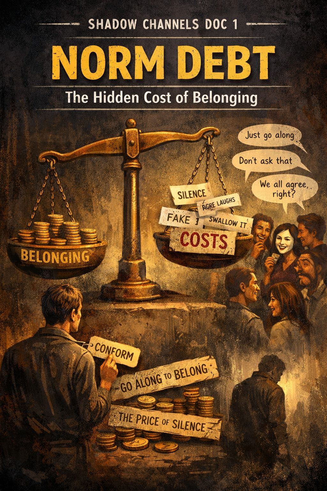

SHADOW CHANNELS DOC 1

NORM DEBT
The Hidden Cost of Belonging
What It Is
Every group has rules.
Some are written.
Most are absorbed through tone, glances, silence, or the stories no one questions.
Norm Debt is the price of admission to stay inside a shared identity:
- agreeing out loud
- not asking the wrong questions
- letting things slide
- saying “same here” even when you don’t feel it
- laughing at what you don’t actually find funny
- not naming what everyone notices
You pay to stay safe.
You pay to stay included.
You pay to not be The One Who Broke the Spell.
Why It Matters
Identity panic doesn’t start when someone disagrees.
It starts when they stop paying the fee.
Groups react strongly to:
- the person who won’t pretend
- the one who questions sacred norms
- the quiet voice asking “why”
That person becomes:
- a disturber
- a heretic
- a traitor
- a threat
Not because their idea is dangerous.
But because it exposes how much everyone else has been paying.
Where It Shows Up
Norm debt is running when people say:
- “I don’t want to rock the boat.”
- “They’ll be mad if I say that.”
- “It’s just easier to go along.”
- “I know it’s wrong, but I can’t start that fight.”
- “I can’t be the first.”
It also shows up as:
- forced agreement
- fake enthusiasm
- tight smiles
- shared discomfort no one names
- double-lives
- private truth / public performance
- knowing something but not saying it
The Deep Structure
Norm Debt equals:
Belonging + Fear of Exile
Belonging is a human need.
But when it depends on self-silencing, the cost rises.
The highest interest rate is paid in:
- resentment
- regret
- numbness
- self-betrayal
Healthy Questions
Ask privately or in a group:
- What am I afraid will happen if I speak honestly?
- Who benefits from me staying quiet?
- What value of mine gets violated when I pay this debt?
- What would “low-cost belonging” look like instead?
- Is the group actually unsafe, or just conditioned?
Signals Debt Is Dropping
You catch yourself:
- saying the small truth politely
- not laughing when it’s not funny
- holding a boundary without apology
- asking a clean question
- being willing to be misunderstood for 10 seconds
Belonging earned through honesty feels different:
Application: One-Sentence Tool
“If it costs me myself to stay, I’m over budget.”
Shadow Channel Link
Norm Debt anchors all the others:
- Permission Cascades start when someone stops paying.
- Group Persona is the mask everyone buys on credit.
- Audience Capture determines who we think demands payment.
Landing Reflection
What debt am I carrying today that no one asked me to borrow?
Index of Shadow Channels
← Back to Index